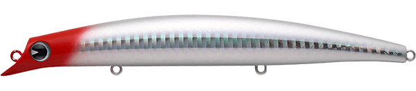
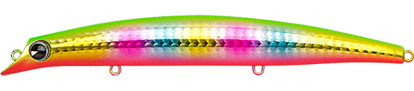
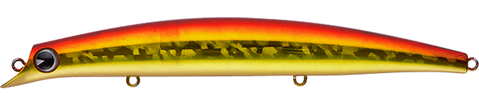
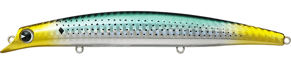

サスケ140裂波
（sasuke 140 裂波）
サスケ140裂波（sasuke 140 裂波）はima（アイマ）のフローティングミノーです。
名作「sasuke 120 裂波」の優れたバランスをそのまま踏襲した140mmモデルで、強いカレントや磯場などタフな条件下での安定感はピカイチ。特にヒラスズキゲームとの相性が良く、“ベスト・オブ・ヒラスズキルアー”との呼び声もある1本です。河口域やサーフなど広大なシャローでも活躍し、ランカーを狙ううえで欠かせないルアーです。

画像出典:ima公式HP
スペック
- メーカー
- ima（アイマ）
- タイプ
- フローティング（ミノー）
- 全長
- 140mm
- 自重
- 20g
- レンジ
- 60〜100cm
- フック
- #3
- リング
- #4
- アクション
- ウォブンロール
- ターゲット
- シーバス・ヒラスズキ
- 価格
- 2,750円（税込）
- 発売
- 2008年6月
▼今すぐチェック
サスケ140裂波の特徴
飛距離・アクション・荒れた条件での安定感をそろえた、ランカー狙いの定番ミノー
-
リップレスによる驚異の飛距離
空気抵抗の少ないリップレス形状で、140mmのミノーながら驚異的な飛距離を出せる。広い河口やサーフ、沖の根まで届かせやすい。
-
レードルリップが生む独特のアクション
レードル（おたま）状のリップが、独特な“釣れる”ウォブンロールを生み出す。sasuke 120 裂波から受け継いだバランスの良さも健在。
-
強いカレントや磯でも抜群の安定感
強いカレントや磯場などタフな条件下でも泳ぎが破綻しにくく、安定感はピカイチ。サラシの中でもしっかり泳いでくれる。
サスケ140裂波の使い方
基本はただ巻き。レンジ60〜100cmを、レードルリップが生むウォブンロールで引いてきます。
磯ではサラシの中や払い出しの流れにルアーを入れ、流れに負けない安定した泳ぎで見せるのが基本。河川や河口ではドリフト気味に流れに乗せ、明暗の境目やヨレを通すのも有効です。
サスケ140裂波の得意な状況
磯のヒラスズキゲームが最大の出番。
強いカレントや荒れた磯場など、タフな条件でも安定して泳ぐので、ほかのミノーでは泳ぎが破綻する場面で頼りになります。広大なシャローが広がる河口域やサーフでのランカーシーバス狙いにも相性抜群です。
ワンポイント
荒れた日ほど安定感が活きるルアーです。サラシの切れ目や払い出しの筋を丁寧に通し、ルアーを長く魚に見せることを意識しましょう。
さらに飛距離が欲しいときは、重心移動を搭載した「sasuke 140 真裂波」への持ち替えがオススメです。
サスケ140の使い分け
| モデル | 全長／自重 | 得意な場面 |
|---|---|---|
| サスケ140裂波 | 140mm／20g | レンジ60〜100cm。荒れた磯や強い流れでの安定感（本記事のモデル） |
| サスケ140真裂波 | 140mm／23g | レンジ60〜100cm。重心移動MRD搭載で飛距離重視 |
同じ140mmでも、安定感とバランス重視なら裂波、飛距離重視なら真裂波と選び分けるのがオススメ。真裂波の詳細はサスケ140真裂波の記事で紹介しています。sasukeシリーズには120mmの裂波や、シンキングの裂風などもラインナップされています。
人気カラー
サスケ140裂波は全11色展開。シーバス・ヒラスズキ狙いでオススメのカラーを厳選して紹介します。

レッドヘッド定番のレッドヘッド。濁りやナイトでもシルエットを出しやすい。

玉彩imaを代表するカラー。アピールが強く視認性も良い。

アカキン赤と金の定番アピールカラー。濁りやローライトに。

コノシロコノシロなど大きめのベイトに合わせたナチュラル系。
画像出典:ima公式HP
サスケ140裂波に似ているルアー
-
 サスケ140真裂波
ima
詳細はこちら＞
サスケ140真裂波
ima
詳細はこちら＞
全長140mm・自重23gの重心移動（MRD）搭載モデル。同じ140mm・レンジ60〜100cmで、さらに飛距離が欲しいときの持ち替えに。
-
 ドーバー120F リーヴァ
アピア
詳細はこちら＞
ドーバー120F リーヴァ
アピア
詳細はこちら＞
全長120mm・自重18gのフローティングミノー。レンジ60cmで、2フック仕様で大型フックを付けられ、磯のヒラスズキにも使える。
-
 カゲロウMD125F
メガバス
詳細はこちら＞
カゲロウMD125F
メガバス
詳細はこちら＞
全長125mm・自重21gのリップレスミッドダイバー。荒れた磯やサーフでも水面から飛び出しにくい設計で、狙いどころが近い。